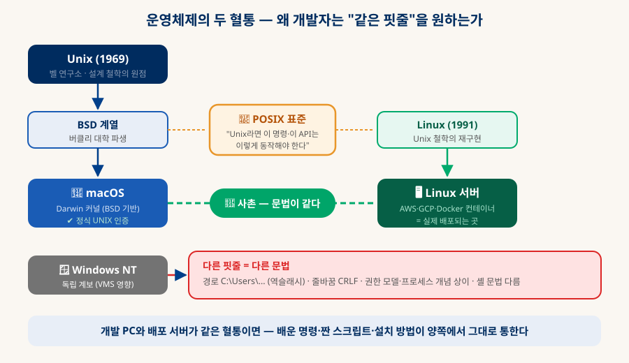
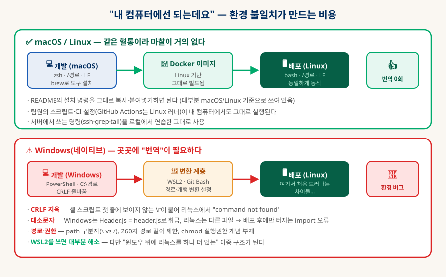
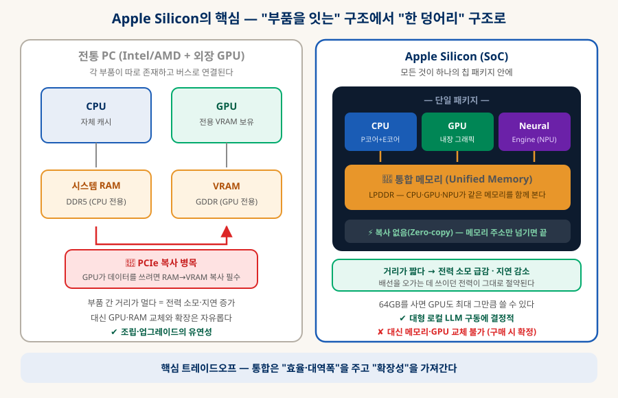
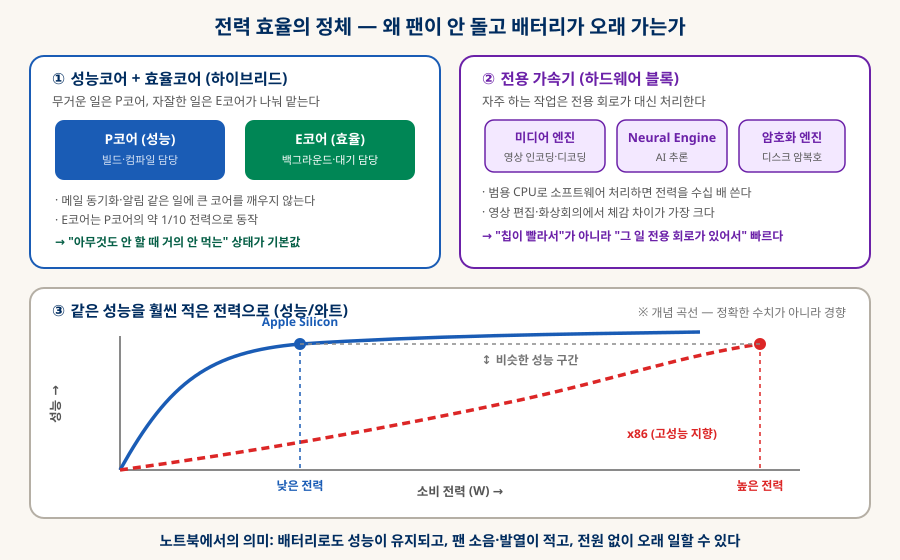
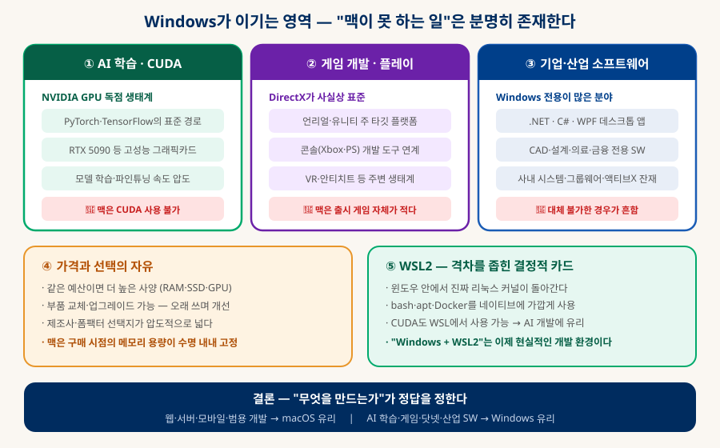

개발 환경으로서의 OS
왜 개발자는 맥을 쓰는가 — 그리고 언제는 아닌가
"개발하려면 맥이 좋다"는 말의 근거를 끝까지 파고든다. Unix 혈통이 왜 결정적인지, 터미널 명령어가 윈도우와 어떻게 대응되는지, Apple Silicon이 하드웨어 구조상 무엇을 바꿨는지, 그리고 반대로 Windows가 이기는 영역은 어디인지까지.
0. 한눈에 보기 — 선호의 진짜 이유는 네 가지다
취향이나 브랜드 이미지가 아니라, 구조적 이유가 있다
개발자 커뮤니티에서 맥의 점유율이 높은 이유는 흔히 "예뻐서"나 "비싸서 좋아 보여서"로 오해되지만, 실제로는 기술적 근거가 명확한 네 가지가 겹친 결과다. 그리고 이 네 가지가 성립하지 않는 분야 (게임·AI 학습·산업용 소프트웨어)에서는 정반대의 결론이 나온다 — 그래서 "맥이 우월하다"가 아니라 "무엇을 만드느냐에 따라 정답이 다르다"가 이 문서의 결론이다.
배포 서버와 같은 핏줄
도구·문서가 이쪽 기준
통합 메모리·전력 효율
팀 표준·iOS 개발 독점
1. Unix 혈통이 중요한 이유 — 가장 결정적인 한 가지
"핏줄이 같다"가 실무에서 정확히 무엇을 의미하는가
A두 개의 계보 — macOS는 Linux의 사촌, Windows는 남남
1969년 벨 연구소에서 태어난 Unix는 이후 모든 서버 운영체제의 원형이 됐다. 여기서 갈라져 나온 BSD 계열이 애플의 Darwin 커널로 이어져 macOS가 되었고, 1991년 리누스 토르발스가 Unix 철학을 새로 구현한 것이 Linux다. 둘은 코드를 공유하진 않지만 POSIX라는 표준 — "Unix 계열이라면 이 명령과 API는 이렇게 동작해야 한다"는 약속 — 아래 같은 문법을 공유한다. 반면 Windows NT는 완전히 독립된 계보에서 자랐다.

그런데 왜 이게 개발자에게 결정적인가? 답은 목적지에 있다. 우리가 만든 웹 서비스가 실제로 돌아가는 곳 — AWS·GCP의 서버, Docker 컨테이너, GitHub Actions의 CI 러너 — 은 사실상 전부 Linux다. 개발용 컴퓨터가 목적지와 같은 혈통이면, 다음 다섯 가지가 자동으로 따라온다:
1️⃣ 같은 명령어
로컬에서 익힌 ls · grep · ssh · chmod를 서버에서 그대로 쓴다. 두 벌을 배울 필요가 없고, 서버 장애 대응 시 손이 먼저 움직인다.
2️⃣ 같은 스크립트
배포·백업 셸 스크립트를 로컬에서 테스트하고 서버에 그대로 올린다. CI 설정(GitHub Actions)도 Linux 러너 기준이라 로컬 검증이 의미를 가진다.
3️⃣ 같은 설치 방법
오픈소스 README의 설치 안내는 대부분 macOS/Linux 기준으로 쓰여 있다. 복사·붙여넣기가 그냥 된다 — "윈도우에서는 어떻게 하지?"를 검색할 일이 없다.
4️⃣ 같은 도구 동작
Docker·Node·Python·컴파일러가 Unix 관행(권한·심볼릭 링크·프로세스 신호)을 전제로 만들어져 있어 예외 상황이 적다.
5️⃣ 같은 파일 규칙
경로 구분자 /, 줄바꿈 LF, 대소문자 구분, 실행 권한(chmod +x) — 사소해 보이지만 어긋나면 배포 후에야 터지는 버그가 된다(아래 B).
➕ 보너스: 서버 그 자체
맥에서 웹서버·DB를 로컬로 띄우는 방식이 리눅스와 거의 같다. "개발 서버 = 내 노트북"이 자연스럽게 성립한다.
B환경 불일치의 실제 비용 — "제 컴퓨터에선 되는데요"
혈통이 다를 때 생기는 마찰은 추상적이지 않다. 아래는 Windows 네이티브 환경에서 실제로 자주 겪는 사고들이며, 공통점은 전부 "배포하고 나서야" 드러난다는 것이다.

| 차이 | 무슨 일이 벌어지나 | 결과 |
|---|---|---|
| 줄바꿈 문자 CRLF vs LF |
Windows는 줄 끝에 보이지 않는 \r을 붙인다. 셸 스크립트에 이게 섞이면… | 리눅스에서 bash: ./deploy.sh: command not found — 눈으로는 멀쩡한데 실행이 안 되는 유령 버그. git의 core.autocrlf 설정으로 대응해야 한다. |
| 대소문자 구분 | Windows(및 기본 macOS)는 Header.js와 header.js를 같은 파일로 취급하지만, Linux는 다른 파일로 본다. | 로컬에서는 잘 되던 import './header'가 배포 서버에서만 404. 신입 개발자를 가장 많이 좌절시키는 사고 유형. |
| 경로 규칙 | 구분자가 \이고 드라이브 문자(C:)가 있으며, 전통적으로 260자 길이 제한이 있었다. | node_modules처럼 깊은 폴더 구조에서 설치 실패. 코드에서 경로를 문자열로 조립하면 크로스 플랫폼 버그가 된다. |
| 권한 모델 | Unix의 chmod +x(실행 권한)·소유자 개념이 Windows에는 같은 방식으로 없다. | 스크립트를 git에 올렸는데 실행 권한이 유실 → 서버에서 Permission denied. |
| 도구 지원 순위 | 새 오픈소스 도구는 보통 Unix 계열부터 지원하고 Windows 지원은 나중이거나 부분적이다. | 최신 도구를 쓰려다 "Windows는 지원 예정" 이슈를 만나는 빈도 차이. |
2. 터미널 — 명령어는 어떻게 대응되는가
개발의 실제 작업 표면. 양쪽 명령을 나란히 놓으면 차이가 선명해진다
개발자가 하루에 가장 많이 쓰는 도구는 편집기와 터미널이다. 패키지 설치, 서버 접속, 로그 확인, git 작업, 빌드 실행이 전부 여기서 일어난다. macOS의 기본 셸은 zsh(리눅스는 주로 bash)로 문법이 사실상 같고, Windows는 PowerShell과 구식 cmd를 쓴다.
A명령어 대응표 — 같은 일, 다른 이름
| 하는 일 | macOS / Linux | Windows (PowerShell / cmd) | 비고 |
|---|---|---|---|
| 파일 목록 보기 | ls · ls -la | dir · Get-ChildItem | PowerShell은 ls를 별칭으로 지원해 헷갈리기 쉽다(동작은 다름) |
| 폴더 이동 | cd /경로 | cd C:\경로 | 구분자와 드라이브 문자 차이 |
| 현재 위치 | pwd | cd (인자 없이) · Get-Location | — |
| 폴더 만들기 | mkdir -p a/b/c | mkdir a\b\c · New-Item -ItemType Directory | 중간 경로 자동 생성 옵션이 다르다 |
| 복사 / 이동 | cp · mv | copy · move · Copy-Item | Unix는 이름 변경도 mv로 한다 |
| 삭제 | rm · rm -rf 폴더 | del · rmdir /s · Remove-Item | ⚠ rm -rf는 확인 없이 지운다 — 경로를 두 번 확인할 것 |
| 파일 내용 보기 | cat · less · head · tail | type · Get-Content | 실시간 로그는 tail -f ↔ Get-Content -Wait |
| 텍스트 검색 | grep "패턴" 파일 | findstr · Select-String | grep은 Unix 문화의 상징 — 파이프와 함께 진가를 발휘 |
| 파일 찾기 | find . -name "*.js" | dir /s *.js · Get-ChildItem -Recurse | — |
| 환경 변수 | export KEY=값 · echo $KEY | set KEY=값 · $env:KEY | 스크립트 이식성이 가장 자주 깨지는 지점 |
| 프로세스 확인 | ps aux · top | tasklist · Get-Process | — |
| 프로세스 종료 | kill -9 PID | taskkill /F /PID | "포트가 이미 사용 중"일 때 필수 |
| 권한 변경 | chmod +x 파일 · chown | icacls (개념 자체가 다름) | Unix 권한 모델이 Windows에 1:1 대응하지 않는다 |
| 관리자 권한 | sudo 명령 | "관리자 권한으로 실행" · runas | Unix는 명령 단위, Windows는 세션 단위 성격 |
| 네트워크 요청 | curl -I https://… | curl(최신 내장) · Invoke-WebRequest | API 테스트의 기본기 (네트워크 문서 §2 참조) |
| 원격 접속 | ssh user@host | ssh (Win10+ 내장) · PuTTY | 이제는 양쪽 다 기본 지원 |
| 명령 연결(파이프) | cat log | grep ERROR | wc -l | Get-Content log | Select-String ERROR | Unix는 텍스트를, PowerShell은 객체를 흘려보낸다 — 철학의 차이 |
# 로그에서 ERROR만 골라 개수 세기 cat app.log | grep "ERROR" | wc -l # 8080 포트를 점유한 프로세스를 찾아 종료 (개발 중 가장 자주 쓰는 조합) lsof -ti:8080 | xargs kill -9 # 폴더에서 TODO 주석이 있는 파일과 줄 번호 찾기 grep -rn "TODO" ./src # 서버 로그를 실시간으로 보며 특정 단어만 필터 tail -f server.log | grep --line-buffered "payment"
B패키지 관리 — 도구를 설치하는 방식
개발 도구 설치 경험도 큰 차이를 만든다. Unix 계열은 명령 한 줄로 설치가 문화이고, Windows는 전통적으로 "설치 파일을 내려받아 다음-다음-완료"였다(최근 winget으로 개선 중).
| 환경 | 패키지 관리자 | 설치 예시 |
|---|---|---|
| macOS | Homebrew (사실상 표준) | brew install git node python |
| Linux (Ubuntu) | apt | sudo apt install git nodejs python3 |
| Windows | winget · Chocolatey · Scoop | winget install Git.Git |
| Windows + WSL2 | apt (리눅스와 동일) | sudo apt install … |
맥이지만 완전히 같지는 않다 — 알아둘 함정 두 가지
① BSD 계열 명령의 미묘한 옵션 차이: macOS의 sed · date · grep은 BSD 판본이라 리눅스(GNU 판본)와 옵션이 조금 다르다. 예컨대 sed -i는 macOS에서 빈 인자(sed -i '')를 요구한다. 리눅스용 스크립트가 맥에서 안 돌아가는 대표 사례이며, brew install coreutils로 GNU 판본을 설치해 해결하곤 한다.
② 파일 시스템 대소문자: macOS는 기본이 "대소문자를 구분하지 않는" 설정이라, §1-B의 대소문자 사고를 맥에서도 놓칠 수 있다. 진짜 방어선은 CI(Linux)에서 빌드를 돌려보는 것이다.
3. Apple Silicon — 하드웨어가 바꾼 것
2020년 M1 이후 "노트북에서 이게 된다"의 기준이 달라졌다
애플이 인텔을 떠나 직접 칩을 만들면서 바뀐 것은 단순한 속도가 아니라 구조다. 핵심은 두 가지 — 모든 것을 한 칩에 통합했고(SoC), 같은 일을 훨씬 적은 전력으로 한다. 이 두 가지가 개발자에게 왜 의미가 있는지를 순서대로 본다.
ASoC와 통합 메모리 — 부품을 잇는 대신 한 덩어리로
전통적인 PC는 CPU·GPU·RAM·VRAM이 각각 독립된 부품이고 버스(PCIe 등)로 연결된다. Apple Silicon은 이 모두를 하나의 칩 패키지에 넣고, 메모리도 하나로 합쳐 CPU·GPU·NPU(Neural Engine)가 같은 메모리를 공유하게 만들었다 — 이것이 통합 메모리(Unified Memory)다.

구조 차이가 만드는 실질적 결과는 세 가지다:
| 항목 | 전통 구조 (CPU + 외장 GPU) | Apple Silicon (통합) |
|---|---|---|
| 데이터 이동 | GPU가 쓰려면 RAM → VRAM으로 복사해야 한다 (PCIe 경유, 시간·전력 소모) | 복사 없음(Zero-copy) — 같은 메모리를 보므로 주소만 전달 |
| 메모리 용량 | GPU는 VRAM 크기(예: 24GB)까지만 사용 가능 — 초과하면 아예 못 돌린다 | 64GB를 샀다면 GPU도 그 대부분을 쓸 수 있다 — 대형 로컬 LLM에 결정적 |
| 전력·발열 | 부품 간 거리가 멀어 신호 전송에 전력이 많이 든다 | 거리가 짧아 전송 전력이 급감 → 조용하고 오래 간다 |
| 확장성 | ✔ RAM·GPU 교체·증설 자유 | ✘ 구매 시점에 영구 확정 (납땜) |
B전력 효율의 정체 — 팬이 안 도는 이유
"성능이 좋다"보다 개발자가 체감하는 것은 같은 성능을 훨씬 적은 전력으로 낸다는 점이다. 비결은 마법이 아니라 세 가지 설계 선택이다.

① 하이브리드 코어
강력한 P코어(빌드·컴파일)와 저전력 E코어(백그라운드·대기)를 나눠 배치. 메일 동기화 같은 잡일에 큰 코어를 깨우지 않아, "쉬고 있을 때 거의 안 먹는" 상태가 기본이 된다.
② 전용 가속기
영상 인코딩·AI 추론·디스크 암호화처럼 자주 하는 일은 전용 회로가 처리한다. 범용 CPU로 소프트웨어 처리할 때보다 전력을 수십 배 아낀다 — "칩이 빨라서"가 아니라 "그 일 전용 부품이 있어서" 빠른 것.
③ ARM 아키텍처 이점
모바일에서 출발한 ARM 명령어 체계는 저전력 설계에 유리하고, 최신 미세 공정과 결합해 성능/와트에서 우위를 만든다. 절대 최고 성능이 아니라 효율 곡선의 승리다.
공정한 비교를 위해 — Apple Silicon이 못 하는 것
① CUDA 부재: AI 학습 생태계의 표준인 NVIDIA CUDA를 쓸 수 없다. Metal·MLX 같은 애플 자체 프레임워크가 있지만 생태계 규모가 다르다.
② 확장 불가: RAM·SSD를 나중에 늘릴 수 없고, 애플의 메모리 추가 옵션 가격이 비싸다. 구매 시 사양 판단이 수명 전체를 좌우한다.
③ x86 호환성: 대부분 Rosetta 2로 해결되지만, 일부 구형 도구·가상머신·특정 드라이버는 여전히 문제가 된다.
④ 최상위 절대 성능: 전력 제한이 없는 데스크톱에서 고성능 CPU+RTX 조합의 최대 성능은 여전히 별개 리그다.
4. Windows가 유리한 영역 — 여기서는 맥이 답이 아니다
분야를 바꾸면 결론이 완전히 뒤집힌다

AAI 학습 — CUDA 생태계의 압도적 지배
딥러닝 모델을 학습·파인튜닝하려면 사실상 NVIDIA GPU와 CUDA가 필요하다. PyTorch·TensorFlow의 최적화, 대부분의 논문 구현 코드, 커뮤니티 튜토리얼이 전부 CUDA 기준이다. 맥은 CUDA를 지원하지 않으므로(외장 GPU도 못 씀), 진지하게 모델을 학습시킨다면 NVIDIA GPU가 달린 Windows/Linux 머신이 유일한 현실적 선택이다. 앞서 본 대로 추론은 맥이 강하지만 학습은 완전히 다른 이야기다.
B게임 — 개발도 플레이도 Windows의 홈그라운드
PC 게임 그래픽 API의 표준인 DirectX는 Windows 전용이고, 언리얼·유니티의 주력 타깃도 Windows다. 콘솔(Xbox·PlayStation) 개발 도구, VR 기기 지원, 안티치트 시스템까지 Windows 중심으로 형성돼 있다. 게임 개발자에게 맥은 선택지가 아니며, 개발자가 아니어도 "작업도 하고 게임도 하는" 한 대의 컴퓨터라면 Windows가 합리적이다.
C기업·산업용 소프트웨어 — 대체 불가의 영역
.NET·C#·WPF 기반 데스크톱 앱 개발은 Windows가 본진이다(크로스 플랫폼화가 진행 중이지만 데스크톱 UI는 여전). 또한 CAD·설계·의료·금융·제조 분야의 전용 소프트웨어, 그리고 한국 특유의 관공서·금융 사이트 환경까지 — 맥에서는 아예 실행되지 않는 필수 프로그램이 존재하는 직군이 여전히 많다.
D가격과 선택의 자유
같은 예산이면 Windows 노트북·데스크톱의 사양(RAM·SSD·GPU)이 대체로 높고, 폼팩터와 제조사 선택지가 넓다. 무엇보다 부품 교체·업그레이드가 가능해서, 처음엔 저렴하게 시작하고 나중에 RAM·GPU를 늘리는 전략이 가능하다. 맥은 구매 시점의 메모리 용량이 기기 수명 내내 고정된다는 점에서 초기 판단의 부담이 크다.
EWSL2 — 격차를 좁힌 결정적 카드
앞서 언급했듯 WSL2는 윈도우 안에서 진짜 리눅스 커널을 돌린다. bash·apt·Docker를 거의 네이티브처럼 쓸 수 있고, WSL에서 CUDA도 사용 가능하다. 즉 "리눅스 개발 환경 + NVIDIA GPU"를 한 대에서 얻을 수 있다는 뜻이며, 이는 AI 개발자에게 맥이 줄 수 없는 조합이다. §1의 마찰 대부분이 WSL 안에서는 사라진다.
5. 결론 — 무엇을 만드는가로 결정하라
OS는 신념이 아니라 도구다
| 이런 걸 만든다면 | 추천 | 이유 |
|---|---|---|
| 웹 프론트/백엔드, 서버 | macOS 또는 Linux | 배포 환경(Linux)과 같은 혈통 — §1의 이점을 그대로 누린다 |
| iOS·macOS 앱 | macOS 필수 | Xcode가 macOS에서만 동작 — 선택의 여지가 없다 |
| 안드로이드 앱 | 어느 쪽이든 | Android Studio가 양쪽 모두 지원. 맥이면 iOS까지 커버 가능 |
| AI 모델 학습·파인튜닝 | Windows + WSL2 또는 Linux | NVIDIA GPU + CUDA가 사실상 필수 |
| 로컬 LLM 추론·실험 | macOS (통합 메모리 큰 모델) | 64GB 통합 메모리로 대형 모델을 노트북에서 구동 |
| 게임 개발 | Windows | DirectX·엔진·콘솔 도구 생태계 |
| .NET·기업용 데스크톱 | Windows | 본진 플랫폼, 사내 시스템 호환성 |
| 학생·입문자 (예산 우선) | Windows + WSL2 | 가성비 + WSL로 Unix 환경 확보 — 실용적 절충안 |
| 서버 운영·인프라 | Linux (데스크톱도) | 운영 대상과 100% 동일한 환경, 무료 |